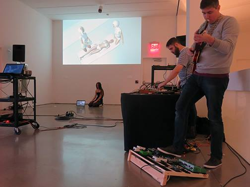

photo by Hector Canonge
This is about friendship. Greg Paul and Conor Perreault have been friends since childhood. A few years back, they were mourning the fact that they didn’t see each other enough anymore. You know how it is: work, relationships, family, people move. It’s hard to stay in touch. Their solution: schedule time to get together on a regular basis, have a home cooked meal, drinks some beers, catch up, then plug in some pedals or grab an instrument or just go near a microphone, and make some noise.
The resulting music is a celebration of fellow feeling. It’s about embracing uncertainty, loving a friend’s weirdness, exploring mistakes, and exorcising demons. The music has been called goopcore, and electronic primitivism, and worse1. Their improvisations flow from harsh electronic noise to gentle acoustic strummings and back, held aloft by otherworldly ambient textures and/or simple vocal harmonies.
Though the frequency of these sessions has varied over the years2, and though they’re living in different states these days3, they’re still at it. Sometimes they share recordings of the fruits of their meetings online (see below). Other times they broaden the circle and do their communion in the presence of an audience of friends and well-wishers.
Two Modern Blokes